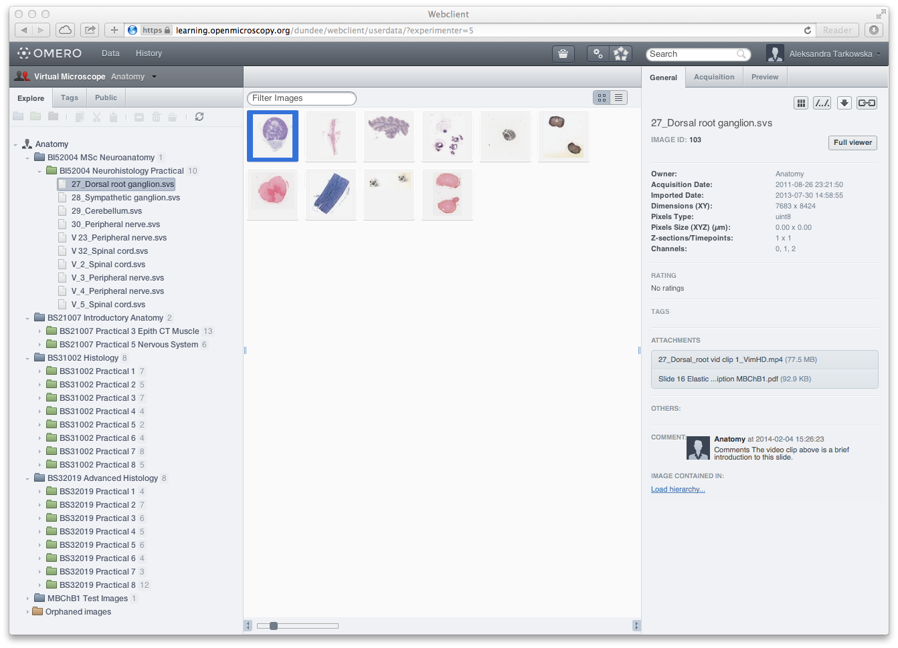

Customizing OMERO.web
OME Paris 2014
Aleksandra Tarkowska | Will Moore | Simon Li | Douglas Russell
Customizing OMERO.web
- Configure web settings
- Use as a webservice
- Extend with your own apps
Configure web settings
Login screen
$ bin/omero config set omero.web.login_logo 'http://www.url/to/image.png'

Public User
- Public visitors are logged-in as a specified 'public user'
- Visitors are able to access data available to public user
- Functionality exposed can be controlled by url filters
- See Public Data Documentation
$ bin/omero config set omero.web.public.enabled True
$ bin/omero config set omero.web.public.server_id 1
$ bin/omero config set omero.web.public.user ''
$ bin/omero config set omero.web.public.password '*****'
$ bin/omero config set omero.web.public.url_filter
'^/(?!webadmin|webclient/action/\w+|webclient/annotate_(file|tags|comment))'
Public Repository Examples
- Stowers ODR (standalone app)
- JCB data-viewer (standalone app)
- SSBD (links to data in webclient)
- EM-Databank (iframe)
LDAP
- OMERO supports login authentication via LDAP
- Synchronizing LDAP on user login
- Group and User lookup filters support
- See LDAP Documentation
$ bin/omero config set omero.ldap.sync_on_login true
$ bin/omero config set omero.ldap.group_filter
"(&(objectClass=groupOfUniqueNames)(cn=omeroGroup))"
$ bin/omero config set omero.ldap.group_mapping "name=cn"
$ bin/omero config set omero.ldap.new_user_group ":query:(uniqueMember=@{dn})"
$ bin/omero config set omero.ldap.user_filter "(objectClass=inetorgperson)"
Virtual Microscope
next step in learning

hardware, for slide digitisation and software viewers that allow users to zoom and change magnification to examine digitised slides
Benefits:
- efficient and effective ways to teach subject specialties
- open access to explore and examine the sections at different levels of magnification
- helping develop classification and identification skills without the need for high-cost microscopes and thin section preparation facilities
- open source project
OMERO.web as webservice
OMERO.web services
- See WebGateway documentation
- Need to be logged-in (or 'public user' access)
- Full viewer:
/webgateway/img_detail/3925542
Suitable for embedding in iframe - Link to data in webclient:
/webclient/?show=dataset-1
Supports project, dataset, image, screen, plate, well
WebGateway: JSON methods
- Simple Project, Dataset methods. E.g:
- List projects: /webgateway/proj/list/
- Datasets in Project: webgateway/proj/<projectId>/children/
- Images in Dataset: webgateway/dataset/<datasetId>/children/
- Image json has lots of info (used by full viewer) webgateway/imgData/<imageId>/
- jsonp supported for cross-domain queries, E.g. jQuery:
$.ajax({
url: "https://nightshade.openmicroscopy.org/webgateway/proj/list/",
jsonp: 'callback',
success: function(data) { // },
})WebGateway: Image Rendering
Embedding live image
OMERO.figure
- OMERO.figure demo is static, using JCB webservice
Extending OMERO.web
- Create a new OMERO.web app
- Optional: show app within webclient as 'plugin'
Create an OMERO.web app
- OMERO.web uses the Django framework to support apps
- Apps can be installed onto existing OMERO.web deployments
- Apps can use or extend existing page templates or code
E.g. webclient uses webgateway image viewer - See Creating an app documentation
App examples
- Ship with OMERO.web:
- webgateway | webclient | webtest
- External sites:
- Prototypes:
- OMERO.figure
Webclient plugins
- Hooks to bring app content into webclient (center & right)
- webtest examples included in OMERO.web
# omeroweb/settings.py
"omero.web.ui.right_plugins": ["RIGHT_PLUGINS",
'[["Acquisition", "webclient/data/includes/right_plugin.acquisition.js.html", "metadata_tab"],'\
#'["ROIs", "webtest/webclient_plugins/right_plugin.rois.js.html", "image_roi_tab"],'\
'["Preview", "webclient/data/includes/right_plugin.preview.js.html", "preview_tab"]]', json.loads],

OMERO.webtagging

- Uses 'central panel' plugin to show current dataset
- See: User Guide | Code on Github
- Douglas Russell (Oxford)
OMERO.searcher

- Uses 'right panel' plugin to search with selected images
- See: More Info | Code on Github
- Simon Li (Dundee)